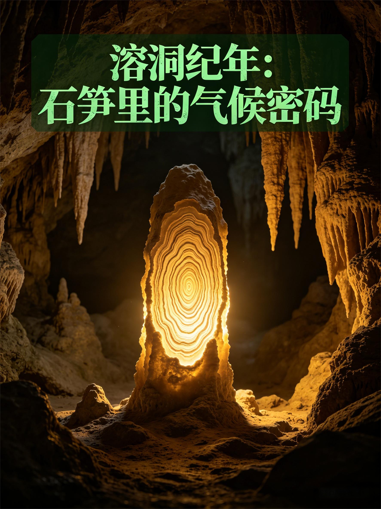
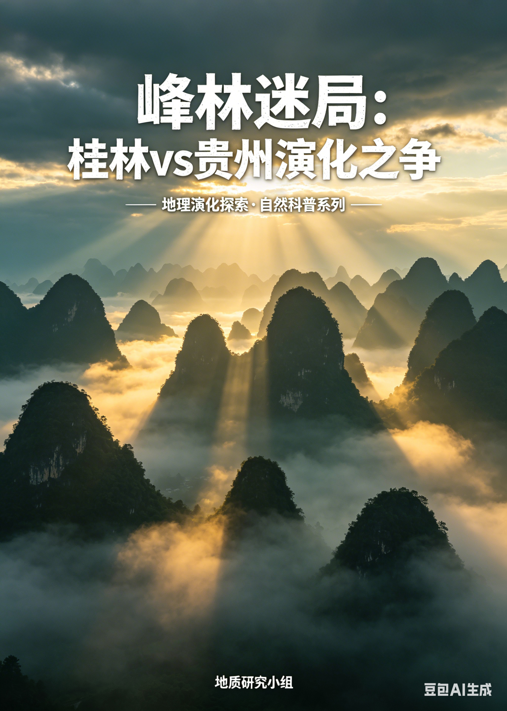
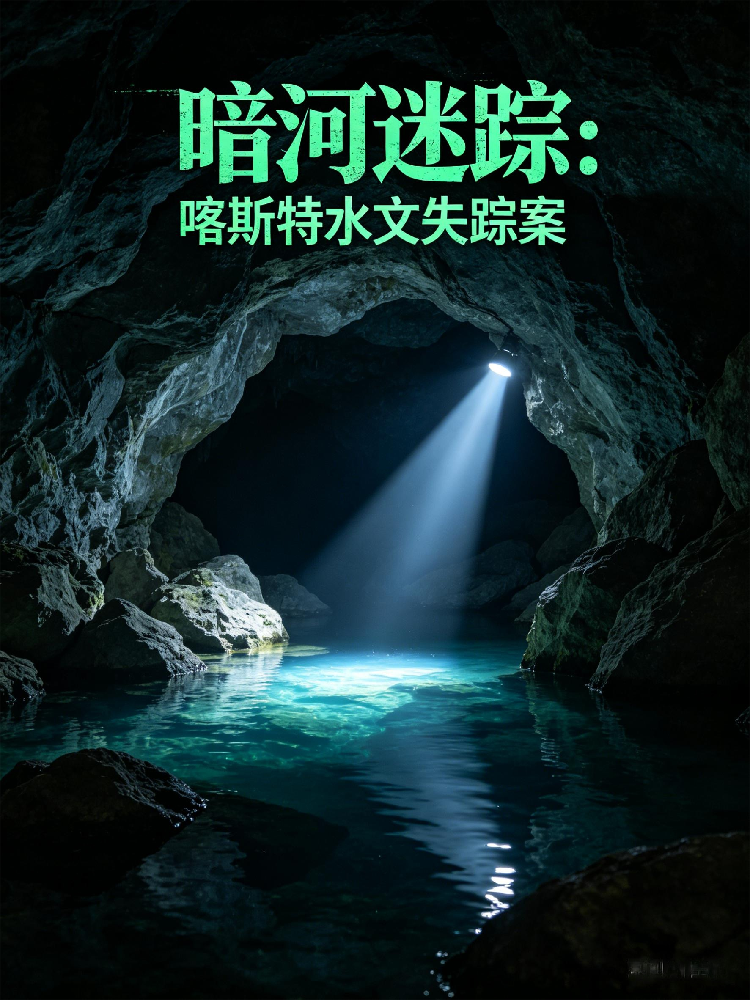

山是水的诗，石是时光的信。
在温暖湿润的土地上，流水以温柔却坚定的力量，将石灰岩雕琢成峰林、溶洞与石林。
这便是喀斯特地貌，大地写给岁月的情书。
接下来，让我们一起在光影中，读懂这份来自地球的浪漫地质密码。



正在生成测评试卷...
基于您的答题情况，AI为您生成专属学习诊断
答题正确率: 0%
用时: 0分钟
待评定
AI正在分析您的答题数据，生成个性化报告...
开启您的喀斯特地貌知识测评
系统将从知识库中智能抽取题目，完成后AI将为您生成包含雷达图、薄弱点分析和改进建议的个性化学习报告。